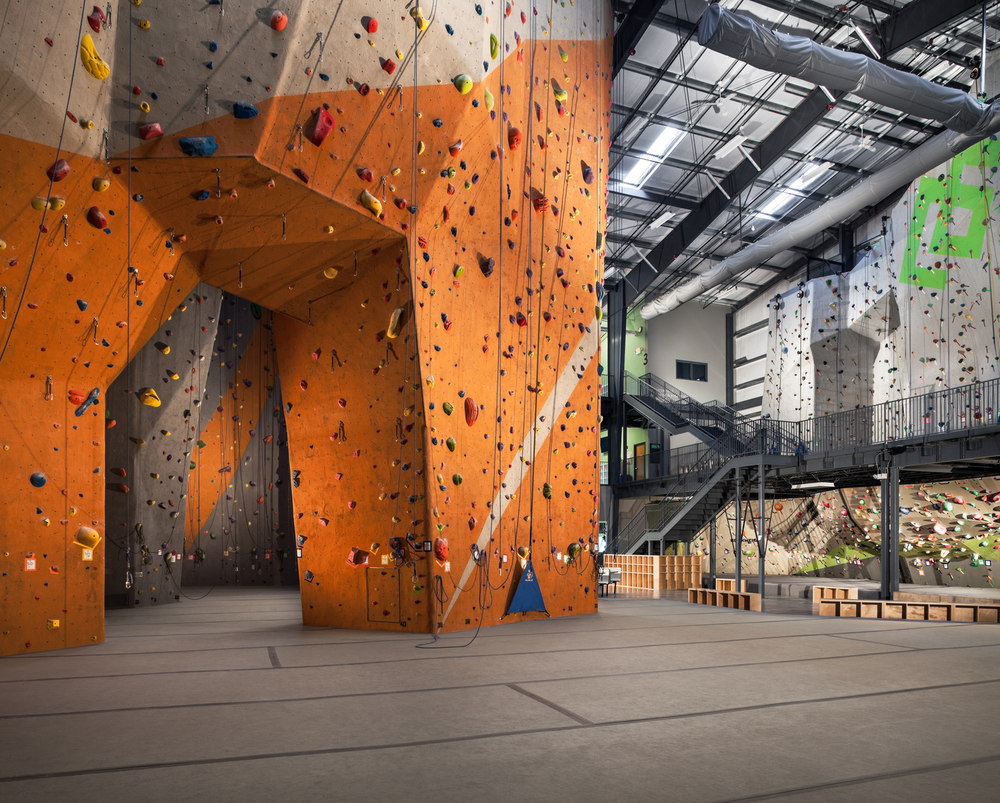

The Top Five Family Activities in Nashville
The Escape Game
The Escape Game is a very intense game of puzzles that requires a lot of teamwork and cooperation to escape from a room in 60 minutes. There are two locations in Nashville, one is located downtown on 3rd Avenue North and the one is on East Iris Drive. Each location has an abundance of different rooms that each have their own theme and different obstacles that have to be overcome to escape in the time limit.
The Escape Game - Official Site
Hours:
Call or go online to reserve a time and room
Locations:
162 3rd Avenue North
Nashville, TN 37201
510 East Iris Drive, Unit D
Nashville, TN 37204
Sky High
Sky High is a sports plex that features a wide array of different activities both adults and children. Most of their activities involve large trampolines that are used to jump on and play games like basketball and dodgeball. They also feature a super-sized foam pit and an area just for kids to roam and play.
Hours:
Sunday 12PM - 8PM
Monday 11AM - 9PM
Tuesday 2PM - 9PM
Wednesday 2PM - 9PM
Thursday 2PM - 9PM
Friday 11AM - 11PM
Saturday 11AM - 11PM
Location:
5270 Harding Place
Nashville, TN 37217
Climb Nashville
Climb Nashville is an indoor rock-climbing facility and fitness center. There are two locations around Nashville with one being on Charlotte Avenue and the other one on Eastland Ave. The Charlotte Avenue location is the newest location and it is a 17,000 square-foot facility that manages to squeeze 20,000 square feet of total climbing surface inside, with several routes peaking at almost 60-feet high. This location also has a workout room, yoga and fitness center, and a café.
Climb Nashville West - Official Site
Hours:
Monday - Friday 5AM - 10PM
Saturday
9AM - 10PM
Sunday
12PM - 10PM
Location:
3600 Charlotte Ave
Nashville, TN 37209
Climb Nashville East - Official Site
Hours:
Monday - Friday 12PM - 10PM
Saturday
9AM - 10PM
Sunday
12PM - 10PM
Location:
1900 Eastland Ave
Nashville, TN 37206
The Nashville Zoo
The Nashville Zoo encompasses 200 acres and is located 6 miles from downtown Nashville. The zoo has 365 animal species and 2,285 individual animals that range from mammals to fish. Nearly 810,000 people visit the Nashville Zoo annually and over 35,000 school children visit as part of their education.
The Nashville Zoo - Official Site
Hours:
January 2 - March 10
9AM - 4PM
March 11 - October 12
9AM - 6PM
October 13 - December 31 9AM - 4PM
Location:
3777 Nolensville Pike
Nashville, TN 37211
Centennial Sportsplex

Centennial Sportsplex is a multi-use athletic complex that features two ice arenas, an Olympic-size swimming pool, a fitness center, and several tennis courts. The ice arenas are sometimes open to the public but are mostly used for organized ice hockey. There are numerous programs that are offered including classes teaching swimming, aerobics, figure skating, tennis, and many more.
Centennial Sportsplex - Official Site
Various phone numbers for different venues
Hours:
Various hours for different venues
Locations:
222 25th Ave. N.
Nashville, TN 37203